sebuah halaman untuk
ternyata rumah bisa hadir dalam bentuk seseorang, dan mas nemuin itu di dedee.
Klik kuenya untuk tiup lilin 🎂
Mas suka cara dede peduli, bahkan di hal-hal kecil yang mungkin orang lain nganggep biasa aja. Cara dede selalu ngingetin mas makan, nyuruh mas istirahat, marah kalau mas tidur terlalu malam — itu semua bikin mas ngerasa ada yang bener-bener mikirin mas. Dan jujur, mas nyaman banget diperlakukan kayak gitu sama dede.
Mas suka waktu dede cerita panjang lebar tentang hari dede, tugas kampus, orang-orang di sekitar dede, atau bahkan hal random yang sebenernya ga penting. Karena dari situ mas ngerasa dede nganggep mas tempat cerita dede. Mas suka jadi orang yang dede cari buat nyeritain semuanya.
Walaupun kadang dede gengsi, gampang overthinking, atau sering mikir terlalu jauh, mas tau semua itu muncul karena dede sayang sama mas. Mas bisa ngerasain gimana besar rasa dede dari hal-hal kecil yang dede lakuin. Dan jujur, dicintai sama dede tuh rasanya hangat banget.
Aneh ya, padahal kita hampir tiap hari chat atau call, tapi mas tetep gampang kangen sama dede. Kadang baru beberapa jam ga ngobrol aja rasanya ada yang kurang. Sesimpel itu pengaruh dede di hari-hari mas sekarang.
Kalau sama dede mas ngerasa bisa jadi diri mas sendiri tanpa takut dihakimi. Mau mas lagi ngeselin, capek, ngeluh, random, atau lagi banyak pikiran, dede tetep dengerin mas. Dan itu hal yang ga semua orang bisa kasih.
Mas ga tau sejak kapan, tapi sekarang hampir semua hal kecil bikin mas inget dede. Lagu, makanan, film, bahkan hal random di jalan kadang bikin mas mikir “ih ini dedee banget.” Dede bener-bener udah jadi bagian dari keseharian mas.
Mas suka gimana seberat apapun masalah kita, sejauh apapun kita sempet diem-dieman, ujung-ujungnya kita tetep nyari satu sama lain lagi. Kita mungkin banyak kurangnya, tapi mas suka karena kita masih sama-sama mau bertahan dan belajar.
Mas suka dede bukan karena dede sempurna. Mas suka dede karena dede ya dede. Dengan semua sifat dede, cara dede ngomong, cara dede marah, cara dede cemburu, cara dede sayang, semuanya bikin mas nyaman dan susah buat ga jatuh cinta sama dede terus.
Mas suka ketika dede mau diajak nobar walaupun kadang ujung-ujungnya kita malah sibuk ngobrol daripada fokus sama filmnya. Mas suka pas vc sama dede, apalagi kalau kita ngomong random sampe larut malam atau cuma diem-dieman tapi tetep nyaman. Mas juga suka saat dede tiba-tiba manja, manggil mas dengan cara khas dede, atau pas dede cemburu kecil yang lucu itu.
Dan jujur, hal-hal kecil kaya gitu yang bikin mas makin sayang sama dede. Karena mungkin buat orang lain biasa aja, tapi buat mas itu jadi bagian dari kebahagiaan kecil yang selalu mas tunggu tiap hari.
kumpulan foto dede yang paling mas suka 🌸
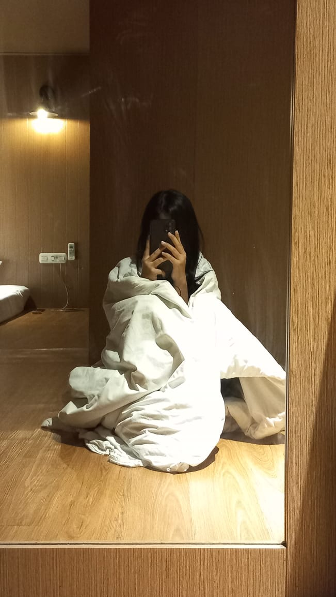
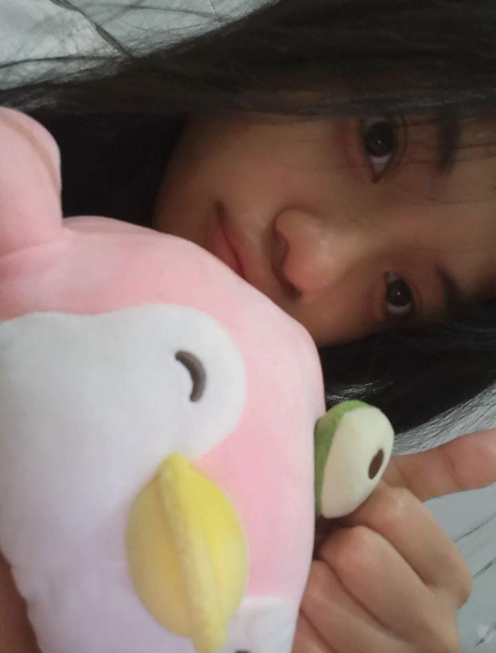
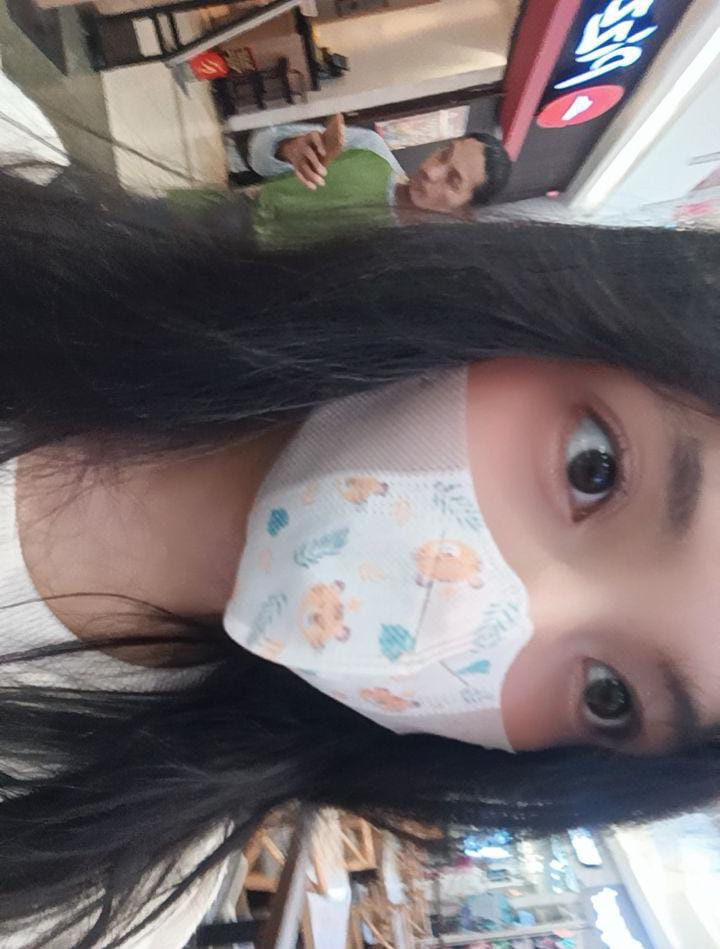
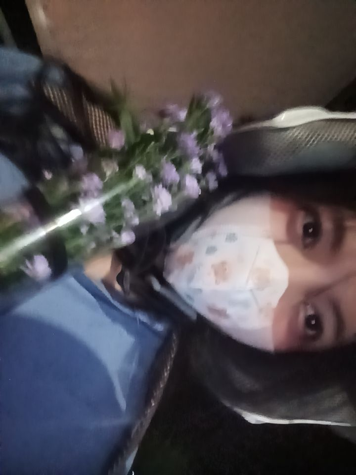
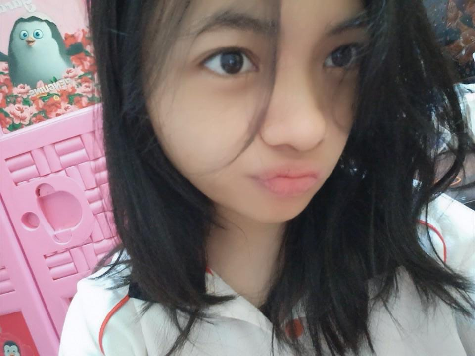
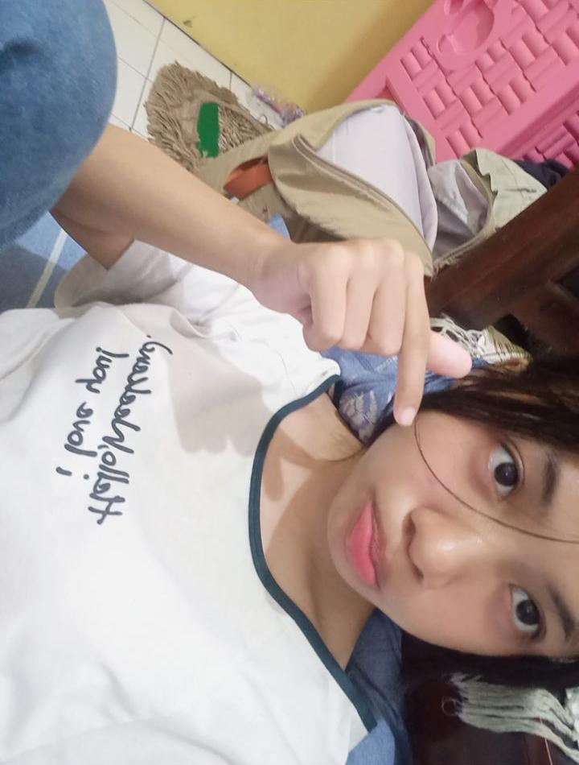
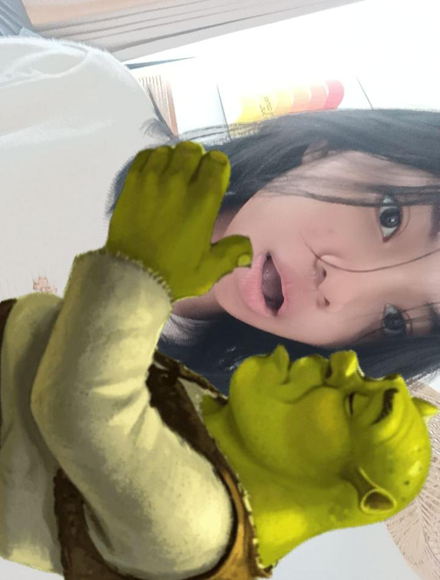
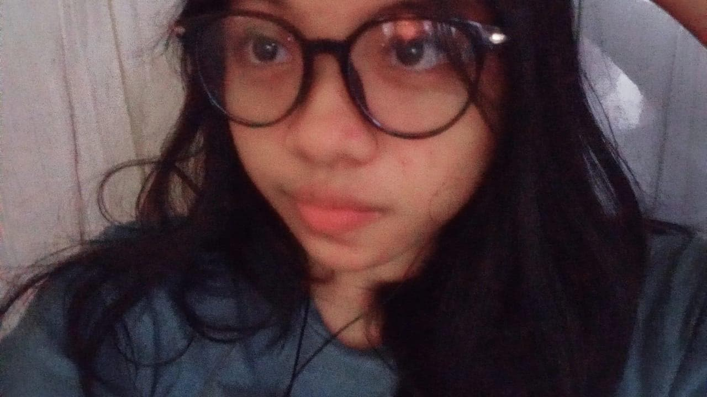
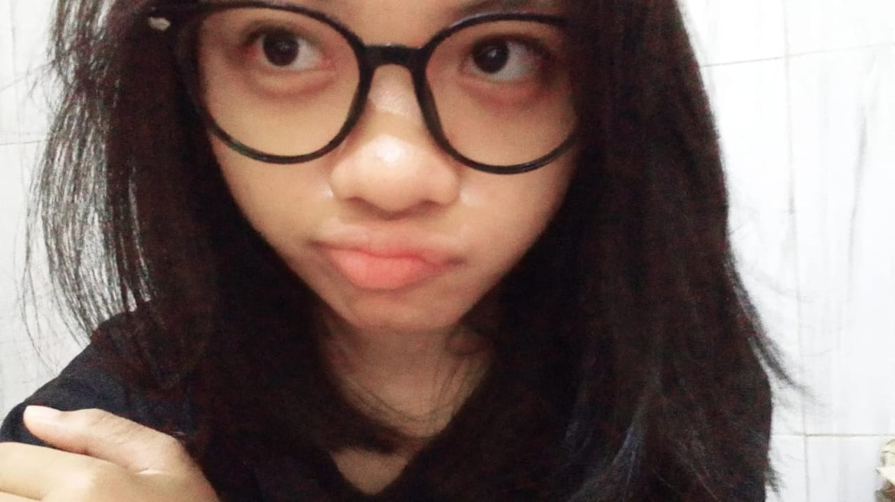
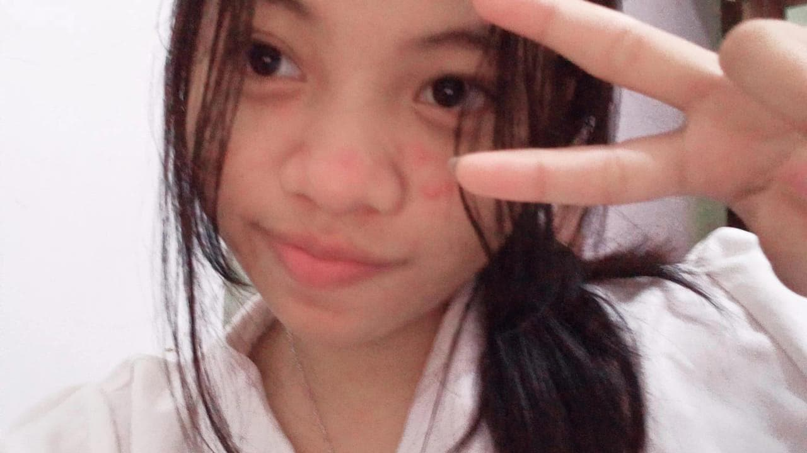
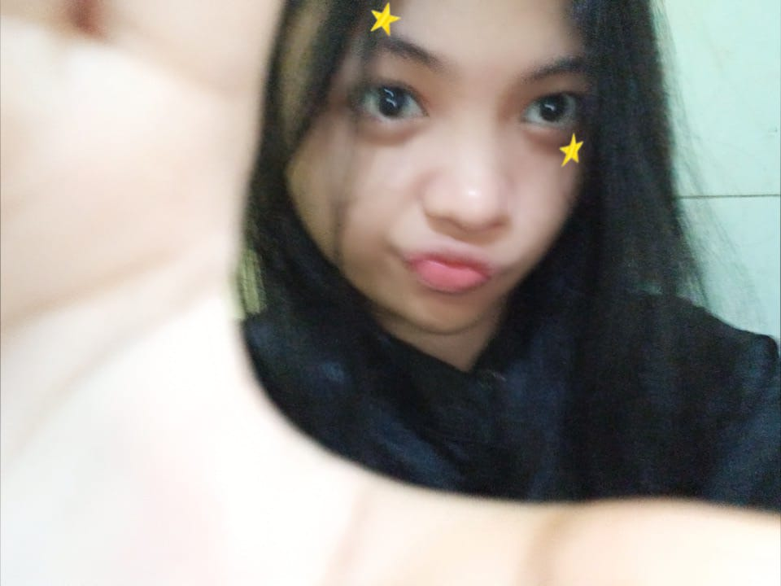
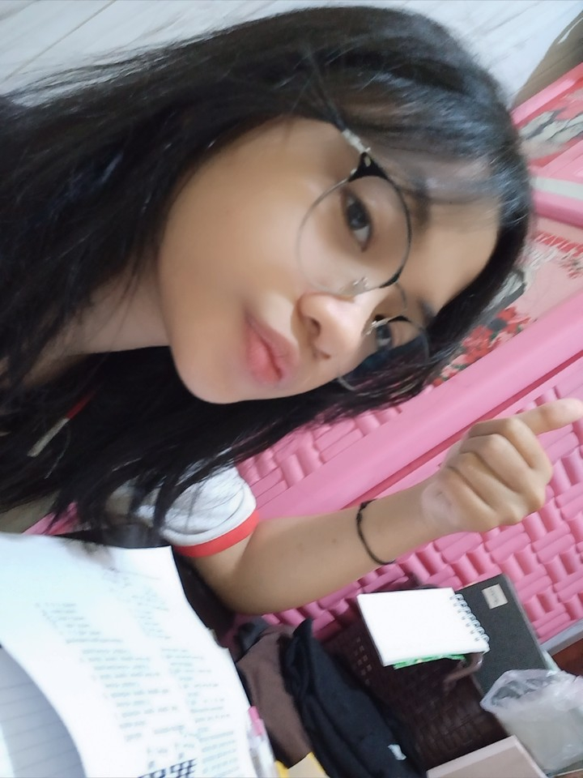
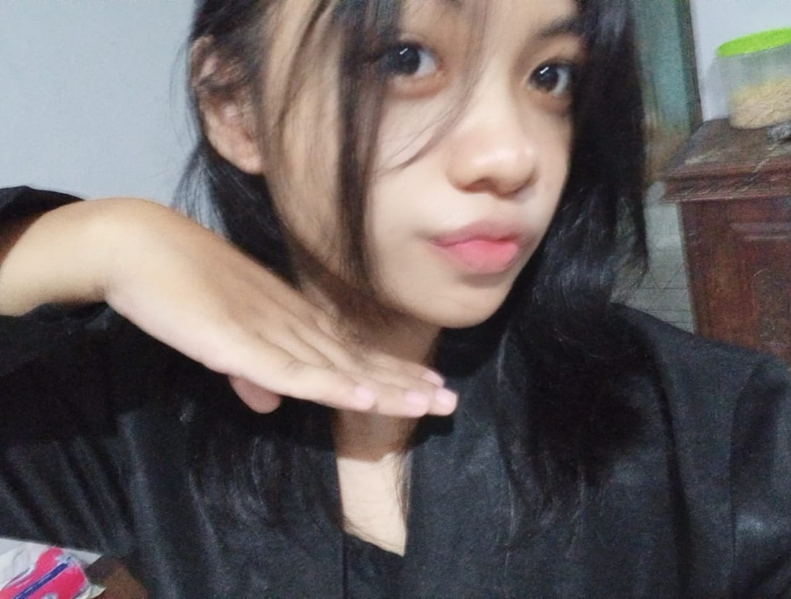
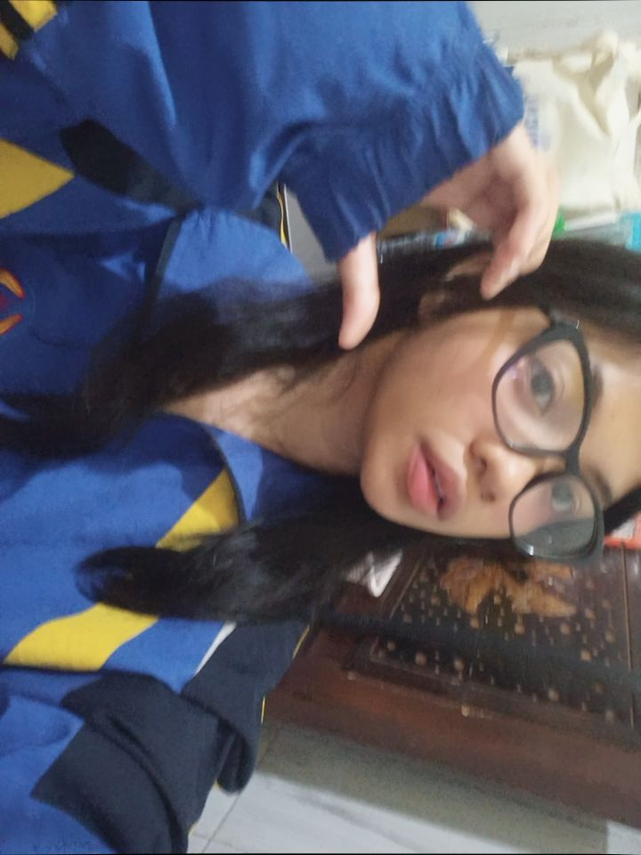
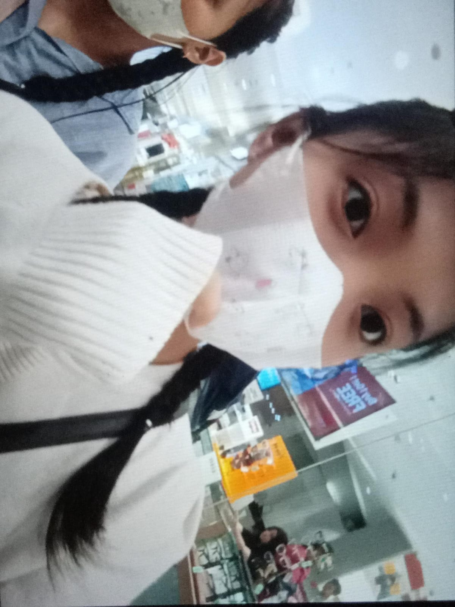
kumpulan video dede yang ada di galeri mas 🎥
Mas ga pernah nyangka kalau dari aplikasi random kaya litmatch, mas bisa ketemu seseorang yang akhirnya jadi rumah buat mas sendiri.
Awalnya kita cuma dua orang asing yang ngobrol biasa, saling nanya hal random, saling nunggu balasan chat, sampai akhirnya tanpa sadar mas jadi terbiasa sama dede. Terbiasa nyari dede, nungguin dede, dan pengen cerita apa aja ke dede.
Mas suka semua hal tentang kita, bahkan hal-hal kecil yang mungkin ga penting buat orang lain. Cara dede cerita panjang lebar, cara dede ngambek, cara dede cemburu, cara dede selalu pengen dimengerti tapi diam-diam juga berusaha ngerti mas.
Kita emang banyak banget kurangnya. Kita pernah sama-sama capek, salah paham, diem-dieman, sampai bikin satu sama lain sedih. Tapi dari semua itu, yang paling mas suka adalah kita selalu balik lagi. Selalu masih milih satu sama lain.
Mas tau mas belum jadi pacar yang sempurna buat dede. Kadang mas kurang peka, kurang nunjukin effort, dan bikin dede ngerasa sendiri. Tapi satu hal yang ga pernah berubah dari dulu sampai sekarang: mas masih sayang banget sama dede.
Dan jujur, mas masih pengen banyak hal sama dede. Masih pengen call random sampe ketiduran, masih pengen nonton bareng lagi, masih pengen denger cerita dede tiap hari, masih pengen jadi orang pertama yang dede cari pas lagi seneng ataupun sedih.
Kalau nanti hubungan kita ada cape-capenya lagi, mas harap kita jangan nyerah yaa. Karena menurut mas, hubungan ini terlalu indah buat dilepas cuma karena kita lagi sama-sama lelah.
Terima kasih yaa udah hadir di hidup mas sejauh ini. Terima kasih karena masih bertahan, masih mau belajar, dan masih mau milih mas sampai sekarang.
Mass sayang Dedee.
dengan sepenuh hati,
Karena kadang kata-kata aja nggak cukup, biar lagu-lagu ini yang wakilin perasaan mass ke dedee 🤍